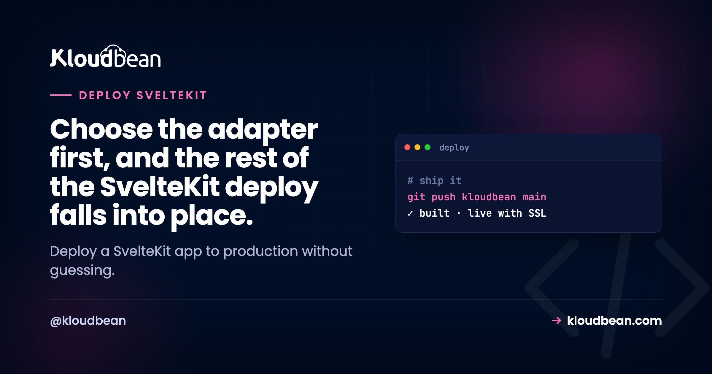

How to Deploy a SvelteKit App to Production the Right Way

You can deploy a SvelteKit app to production on a server you own, and it's less work than the adapter zoo makes it look. New projects ship with adapter-auto, which quietly picks a target the moment you push to Vercel or Netlify. That's lovely until you want your own box. Then adapter-auto has nothing to detect, and you're left staring at a build wondering what actually runs.
The fix is one line in svelte.config.js. This whole guide is really about that line, because for SvelteKit hosting the adapter is the entire decision. Get it right and the rest (Node process, reverse proxy, SSL, env vars) is the same short path every app walks. Get it wrong and you'll fight 404s, blank pages, or a "why won't my form submit" error that has nothing to do with your form.
Pick an adapter. For a server you own, install @sveltejs/adapter-node, run npm run build to produce a build/ directory, then run node build to start a real Node server (behind Nginx, kept alive by PM2). If your app is fully prerendered, use adapter-static instead and serve the built files like any static site with free SSL. Set ORIGIN and your secrets as environment variables, point a domain, and you're live.
The adapter is the entire SvelteKit deploy decision
SvelteKit doesn't assume where it runs. At build time it hands your compiled app to an adapter, and the adapter shapes the output for a target: a Node server, a pile of static files, a serverless function, a Cloudflare Worker. Same source, very different artifacts. Nice design. It's also what trips people up on their first self-host, because the default adapter hides the choice.
adapter-auto sniffs the platform during build. On Vercel it emits functions, on Netlify it emits Netlify functions. On your own Linux server it detects nothing, so it can't build a sensible artifact. Don't fight it. Swap it for the adapter that matches where you're actually deploying. For a box you control, that's almost always adapter-node.
If the words "build artifact" and "long-running process" are new, the mental model behind every deploy is worth ten minutes first. SvelteKit is one clean instance of it.
adapter-node: run your SvelteKit app as a Node server
This is the default answer for "I want to host a SvelteKit app on your own server." adapter-node turns your build into a standalone Node server, which means SvelteKit runs anywhere Node runs. No proprietary runtime, no lock-in. Install it, point your config at it, and build.
npm i -D @sveltejs/adapter-node// svelte.config.js
import adapter from '@sveltejs/adapter-node';
const config = {
kit: {
adapter: adapter()
}
};
export default config;Now build and run. npm run build is Vite under the hood, and it drops a production server into build/. You start it with a single command:
npm run build # vite build, output goes to build/
node build # starts the server, listens on 0.0.0.0:3000That's a real long-running process, the same shape an Express app takes in production. It binds to port 3000 by default; move it with the PORT and HOST variables. In production you want two things around it: Nginx terminating SSL on 443 and forwarding to 3000, and a supervisor (PM2) that restarts the process on a crash or reboot. A terminal running node build is a demo. PM2 plus Nginx is a service. On managed hosting both are wired up for you, so you skip the 11pm config session.
The ORIGIN gotcha that breaks form actions
This one costs people an afternoon, so learn it before it bites. Behind a reverse proxy, SvelteKit can't reliably know the public URL it's being served on. HTTP just doesn't tell it. When it guesses wrong, your form actions start failing with this exact message:
Cross-site POST form submissions are forbiddenYour form is fine. The server simply doesn't believe the request came from its own origin. The clean fix is to tell it, using the ORIGIN environment variable:
ORIGIN=https://your-domain.com node buildIf your proxy sets the standard forwarding headers (most do), you can let SvelteKit read the origin from them instead. Only do this when the proxy is trusted, since a client could otherwise spoof these:
PROTOCOL_HEADER=x-forwarded-proto HOST_HEADER=x-forwarded-host node buildMy advice: set ORIGIN to your real domain and move on. One variable, unambiguous, and it kills the whole "my login form 403s in production but works locally" class of tickets. Need the client's real IP? That's ADDRESS_HEADER. Accept large uploads? Raise BODY_SIZE_LIMIT (default 512kb).
adapter-static: when your SvelteKit app is just files
Sometimes you don't need a server at all. A docs site, a marketing page, a blog, a landing page: if every route can be rendered ahead of time, adapter-static prerenders the whole thing to plain HTML, CSS, and JavaScript. No process to keep alive, nothing to crash, nothing to patch. You host the output like any static site.
npm i -D @sveltejs/adapter-static// src/routes/+layout.js
export const prerender = true;With prerendering on and adapter-static in your config, npm run build writes a folder of static files to build/. That output drops straight onto Kloudbean's free static site hosting, which gives you a custom domain, free auto-renewing SSL, and built-in visit analytics at no cost. Building a single-page app with client-side routing? Set a fallback page (like index.html) in the adapter options and it serves as an SPA.
The catch, and it's the whole catch: adapter-static only works if every page can be prerendered. Add a form action, a +server.js endpoint that runs per request, or a +page.server.js that loads live data, and that route can't be baked at build time. The build stops and points at the route it can't prerender. That's not a bug. It's SvelteKit telling you you've outgrown a static site and need a server, which means adapter-node.
adapter-node and run the real server. All content, could be a folder of files? Use adapter-static. Most real products are the first kind, and forcing a dynamic app into static export is the most common SvelteKit deploy mistake we see.adapter-node vs adapter-static, side by side
If you only remember one table from this page, this is it.
| adapter-node | adapter-static | |
|---|---|---|
| What it outputs | A Node server in build/ | Static files in build/ |
| Needs a running process? | Yes (node build) | No, just serve the folder |
| SSR, form actions, +server routes | All work | Prerendered pages only |
| Talks to a database? | Yes, at runtime | No (client-side calls only) |
| Best for | Apps with auth, dynamic data, writes | Docs, blogs, marketing, SPAs |
| On Kloudbean | Node.js server + PM2 + Nginx | Free static site hosting + SSL |
The third adapter, adapter-auto, is the default. Fine while you're on a platform it recognizes. For your own infrastructure, replace it explicitly so nobody (including future you) has to guess what the build produced. Nuxt has the same story with Nitro presets, covered in deploy a Nuxt app. On Next.js the equivalent decision is output: 'export' versus running the server, in deploy a Next.js app to your own server.
How do I deploy a SvelteKit app to production on a server I own?
Assume adapter-node, since that's the interesting case. Here's the concrete path through the Kloudbean console. It's short, because once the adapter is set you're just deploying a Node app.
Launch a server and add the app
Click Add Server, choose a cloud provider (seven to pick from: AWS, Amazon Lightsail, Google Cloud, Linode, Vultr, DigitalOcean, and UpCloud), select the Node.js stack, and pick a datacenter near your users. SvelteKit builds are Vite builds, so give them headroom; 2GB of RAM is a comfortable start. A few minutes later the server is up with Node, a web server, PM2, a firewall, and SSL in place. Running more than one project? Add each under Applications.

Connect Git and set the build
Deploys come from Git: the repo is the source of truth, not a folder on your laptop. On the app's Git Deployment screen, connect GitHub over OAuth, paste the repository URL, pick a branch, and clone. Then fill the runtime fields, which map one to one onto the diagram above:
- App Directory: the folder with your
package.json. - Port:
3000, unless you setPORTto something else. - Node Version: match your local build. Node 20 or newer for a current SvelteKit.
- Install / Build / Start:
npm ci, thennpm run build, thennode build.

Hit Pull & Deploy. The console streams the pull, install, build, and start steps live, so when something fails you see the exact line, not a spinner. Turn on automated deployment and every push to your branch reruns npm run build and ships itself. That's the git-to-live loop the per-seat platforms rent you, on a server you own.
Environment variables, the SvelteKit way
SvelteKit is unusually clear about environment variables, and getting it right saves you from leaking a secret into the browser bundle. There are four modules, and the split is the whole point:
$env/dynamic/privatereads real values from the environment at runtime. This is where yourDATABASE_URL, API keys, and session secrets belong. They never touch the client.$env/static/privateis the same idea but inlined at build time. Server-only, still safe.- Anything prefixed
PUBLIC_(via$env/static/publicor$env/dynamic/public) is exposed to the browser. Never put a secret behind that prefix.
import { env } from '$env/dynamic/private';
const db = connect(env.DATABASE_URL); // runtime, server-only, never shipped to the browserIn the console, open Environment Variables. A Paste .env Content tab lets you drop your whole file in and convert it to key/value. Set DATABASE_URL, your secrets, and ORIGIN here. Because $env/dynamic/private reads them at runtime, you rotate a secret by editing it in the dashboard and restarting, no rebuild. Why a PUBLIC_ value freezes the moment the build runs is in environment variables, done right.

Add a database, a domain, and SSL
Move data off any local file before you have users. Launch a managed database (Kloudbean runs seven engines: MySQL, MariaDB, PostgreSQL, Redis, Memcached, Elasticsearch, and MongoDB), copy its connection string into DATABASE_URL, and run your migrations as part of the build so the schema exists before the app serves a request:
npm run build && npx prisma migrate deploy # or: npx drizzle-kit migrateThen add your custom domain, point DNS at the server, and install a free auto-renewing certificate so the site loads over HTTPS. If DNS records and certificate steps are new territory, the full walkthrough is in custom domain and SSL for your app. Set ORIGIN to that same domain while you're here, so form actions behave the instant the domain goes live.
Where SvelteKit deploys actually break
The failures are boringly repeatable, and every one maps to a decision above. Knowing them turns a 30-minute stall into a 30-second fix.
adapter-auto left in place. The build detects no known platform on your server and produces something that won't start. Swap to adapter-node explicitly. This is the number one first-deploy stall.
The ORIGIN error. "Cross-site POST form submissions are forbidden" the first time a real user submits a form. Not your code, just the missing ORIGIN. Set it to your domain and redeploy.
adapter-static on a dynamic app. You picked static export, then a +server.js endpoint or a live server load refuses to prerender and the build stops. That route needs a server. Move to adapter-node.
Start command still runs the dev server. Someone sets Start to npm run dev out of habit. Vite's dev server is for reloading as you type, not for traffic. Start must be node build, after Build has run npm run build.
Build tools skipped. Set NODE_ENV=production before install and npm skips devDependencies, where Vite, Svelte, and the adapter live, so the build dies with a missing-module error. Let install pull everything. When a deploy 503s, read the app's error log first; the reason is almost always one of these five, in plain text.
What this will not fix
Two things worth saying straight. First, this is a Linux Node deployment. SvelteKit compiles to a Node server through adapter-node, which runs great on a managed Linux box. It isn't a Windows or .NET target, which is fine, because SvelteKit isn't either.
Second, your server lives in one region, not spread across a global edge network. For most apps a well-placed server with the database right beside it is faster than people expect, since you skip cold starts and round trips to a far-off database. If you truly serve a latency-critical audience on every continent, put Cloudflare in front (a paid add-on, free on Enterprise) so pages cache at the edge while the app runs on hardware you own. "Managed" means the server, stack, SSL, backups, and patching are handled; your code and data stay yours, on a standard Linux box you can move whenever you like.
Set the adapter. Push. Watch it build.
Deploy your SvelteKit app from Git onto a managed server you own, with PM2, Nginx, and SSL already handled. Start at kloudbean.com, and if you're moving off a per-seat host, read the Netlify alternative for full-stack apps. Sizes and plans on pricing.
Seven clouds, one dashboard · Git deploy with live logs · Free auto-renewing SSL · Managed databases · Automatic backups · Free migration · Free trial
FAQ
How do I deploy a SvelteKit app to production?
Choose an adapter that matches your target. For a server you own, install @sveltejs/adapter-node, run npm run build to create a build/ directory, and run node build to start the server. Put it behind Nginx for SSL and under PM2 so it restarts on crash or reboot. Set ORIGIN and your secrets as environment variables, then point a domain at it.
Which SvelteKit adapter should I use to self-host?
Use adapter-node for any app with server-side rendering, form actions, API endpoints, or a database, because it produces a real Node server. Use adapter-static only if every page can be prerendered, such as a docs site or a marketing page. Replace the default adapter-auto explicitly when you deploy to your own infrastructure.
Can I host a SvelteKit app on my own server without Vercel or Netlify?
Yes. SvelteKit with adapter-node is a standard Node server, so it runs on any managed Linux box. Deploy it from GitHub, set Build to npm run build and Start to node build, and you get the full framework with no proprietary runtime and no lock-in.
What does node build do in SvelteKit?
node build starts the production Node server that adapter-node created in the build/ directory. By default it listens on 0.0.0.0 port 3000. You can change that with the PORT and HOST environment variables. It is the long-running process a browser ultimately reaches through your reverse proxy.
How do I fix Cross-site POST form submissions are forbidden?
That error means adapter-node can't determine the public URL it is served on, so it rejects the form as cross-origin. Set the ORIGIN environment variable to your real domain, for example ORIGIN=https://your-domain.com, and restart. Behind a trusted proxy you can instead set PROTOCOL_HEADER and HOST_HEADER to the forwarding headers.
How do I set environment variables in SvelteKit in production?
Read runtime secrets through $env/dynamic/private, which pulls values from the environment when the app runs, so put DATABASE_URL and API keys there. Anything the browser needs must be prefixed PUBLIC_ and is exposed on purpose. Set the values in your host's environment variables panel, never commit them to Git.
Why does my SvelteKit build fail with adapter-static?
Because a route can't be prerendered. adapter-static renders every page to HTML at build time, so a form action, a live server load, or a request-time +server.js endpoint stops the build. Either make the route prerenderable or switch to adapter-node, which runs those routes on a real server.
What Node version and start command should I use for SvelteKit?
Use Node 20 or newer to match a current SvelteKit, and set your production Start command to node build. Do not use npm run dev in production, since that runs the Vite dev server, which is built for local reloading and not for real traffic.